2. The Master Equation¶
A full treatment of the energy states of each molecule is unfeasible for
molecules larger than diatomics, as there are simply too many states. To
simplify things we apply the RRKM approximation, which leaves the state of a
molecule as a function of two quantities: the total energy  and total
angular momentum quantum number
and total
angular momentum quantum number  . Frequently we will find that even
this is too difficult, and will only keep the total energy as an
independent variable.
. Frequently we will find that even
this is too difficult, and will only keep the total energy as an
independent variable.
2.1. Isomers, Reactants, and Products¶
Throughout this document we will utilize the following terminology:
- An isomer is a unimolecular configuration on the potential energy surface.
- A reactant channel is a bimolecular configuration that associates to form an isomer. Dissociation from the isomer back to reactants is allowed.
- A product channel is a bimolecular configuration that is formed by dissociation of an isomer. Reassociation of products to the isomer is not allowed.
The isomers are the configurations for which we must model the energy states.
We designate 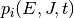 as the population of isomer  having
total energy and total angular momentum quantum number at
time
having
total energy and total angular momentum quantum number at
time  . At long times, statistical mechanics requires that the
population of each isomer approach a Boltzmann distribution 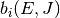:
. At long times, statistical mechanics requires that the
population of each isomer approach a Boltzmann distribution 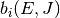:
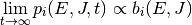
We can simplify by eliminating the angular momentum quantum number to get
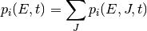
Let us also denote the (time-dependent) total population of isomer
by  :
:
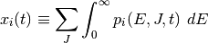
The two molecules of a reactant or product channel are free to move apart from
one another and interact independently with other molecules in the system.
Accordingly, we treat these channels as fully thermalized, leaving as the only
variable the total concentrations  and
and
 of the molecules 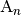 and 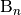
of reactant channel
of the molecules 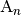 and 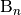
of reactant channel  . (Since the product channels act as infinite
sinks, their populations do not need to be considered explicitly.)
. (Since the product channels act as infinite
sinks, their populations do not need to be considered explicitly.)
Finally, we will use 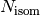, 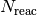, and 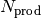 as the numbers of isomers, reactant channels, and product channels, respectively, in the system.
2.2. Collision Models¶
Bimolecular collisions with an inert species  are the primary
means by which an isomer molecule changes its energy. A reasonable estimate –
although generally a bit of an underestimate – of the total rate of collisions
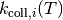 for each isomer comes from
Lennard-Jones collision theory:
are the primary
means by which an isomer molecule changes its energy. A reasonable estimate –
although generally a bit of an underestimate – of the total rate of collisions
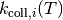 for each isomer comes from
Lennard-Jones collision theory:
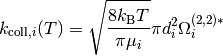
Above,  is the reduced mass, 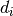 is the collision diameter,
and
is the reduced mass, 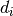 is the collision diameter,
and  is the Boltzmann constant. The collision diameter is
generally taken as 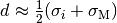,
the arithmetic average of the Lennard-Jones
is the Boltzmann constant. The collision diameter is
generally taken as 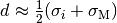,
the arithmetic average of the Lennard-Jones  parameter for the
isomer and the bath gas. The parameter 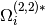 represents
a configurational integral, which is well-approximated by the expression
parameter for the
isomer and the bath gas. The parameter 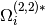 represents
a configurational integral, which is well-approximated by the expression
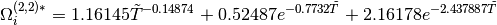
where 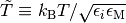
is a reduced temperature and 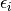 is the Lennard-Jones
 parameter. Note that we have used a geometric average for the
parameters of the isomer and the bath gas in this expression.
Assuming the total gas concentration to be constant and that the gas is ideal,
we obtain an expression for the collision frequency 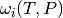,
which makes explicit the pressure dependence:
parameter. Note that we have used a geometric average for the
parameters of the isomer and the bath gas in this expression.
Assuming the total gas concentration to be constant and that the gas is ideal,
we obtain an expression for the collision frequency 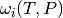,
which makes explicit the pressure dependence:
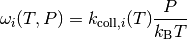
Now that we have an estimate for the total rate of collisions, we need to develop a model of the effect that these collisions have on the state of the isomer distribution. To this end, we define 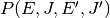 as the probability of a collision resulting in a transfer of a molecule from state 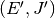 to state 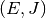. There are two mathematical constraints on . The first of these is normalization:
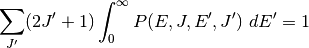
The second of these is detailed balance, required in order to obtain the Boltzmann distribution at long times:
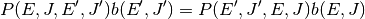
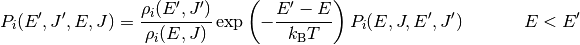
Rather than define models directly for , we usually eliminate the angular momentum contribution and instead define 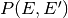. This can be related to via
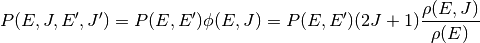
where 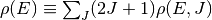.
There are a variety of models used for . By far the most common is the single exponential down model
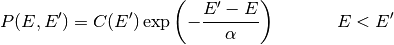
where 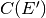 is determined from the normalization constraint. Note
that this function has been defined for the deactivating direction
(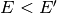) only, as the activating direction (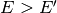)
is then set from detailed balance. The parameter  corresponds to
the average energy transferred in a deactivating collision
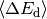, which itself is a weak function of
temperature.
corresponds to
the average energy transferred in a deactivating collision
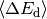, which itself is a weak function of
temperature.
Other models for include the Gaussian down
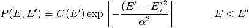
and the double exponential down
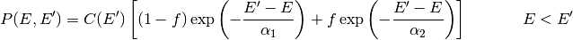
The parameters for these simple models generally contain so much uncertainty that more complex functional forms are generally not used.
2.3. Reaction Models¶
Chemical reaction events cause a change in molecular configuration at constant
energy. The rate coefficient for this process must be determined as a function
of energy rather than the usual temperature. Such a quantity is called a
microcanonical rate coefficient and written as 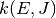. In the master
equation we will differentiate between microcanonical rate coefficients for
isomerization, dissociation, and association by using different letters:
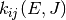 for isomerization, 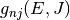 for dissociation,
and 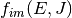 for association. (By convention, we use indices
and  to refer to unimolecular isomers,
to refer to unimolecular isomers,  and
to refer to bimolecular reactant and product channels, and, later,
and
to refer to bimolecular reactant and product channels, and, later,
 and
and  to refer to energy grains.)
to refer to energy grains.)
As with collision models, the values of the microcanonical rate coefficients are constrained by detailed balance so that the proper equilibrium is obtained. The detailed balance expressions have the form
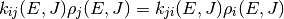
for isomerization and
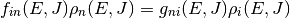
for association/dissociation, where 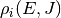 is the density of states of the appropriate unimolecular or bimolecular configuration.
An alternative formulation incorporates the macroscopic equilibrium coefficient 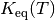 and equilibrium distributions 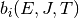 at each temperature:
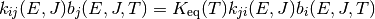
for isomerization and
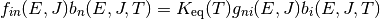
for association/dissociation. Note that these two formulations are equivalent if the molecular degrees of freedom are consistent with the macroscopic thermodynamic parameters. There are multiple reasons to use the latter formulation:
- Only the density of states of the unimolecular isomers need be computed. This is a result of the assumption of thermalized bimolecular channels, which means that we only need to compute the product 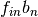, and not the individual values of 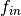 and 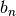.
- Only the reactive rovibrational modes need be included in the density of states. Missing modes will not affect the observed equilibrium because we are imposing the macroscopic equilibrium via .
- Constants of proportionality in the density of states become unimportant, as they cancel when taking the ratio . For example, if the external rotational constants are unknown then we will include an active K-rotor in the density of states; this property means that the rotational constant of this active K-rotor cancels and is therefore arbitrary.
There are two common ways of determining values for : the
inverse Laplace transform method and RRKM theory. The latter requires detailed
information about the transition state, while the former only requires the
high-pressure limit rate coefficient  .
.
2.3.1. Inverse Laplace Transform¶
The microcanonical rate coefficient  is related to the canonical
high-pressure limit rate coefficient via a Boltzmann
averaging
is related to the canonical
high-pressure limit rate coefficient via a Boltzmann
averaging

where is the rovibrational density of states for the
reactants and  . Neglecting the
angular momentum dependence, the above can be written in terms of Laplace
transforms as
. Neglecting the
angular momentum dependence, the above can be written in terms of Laplace
transforms as
where  is the rovibrational partition function for the
reactants. The above implies that and
is the rovibrational partition function for the
reactants. The above implies that and  are the transform
variables. We can take an inverse Laplace transform in order to solve for
:
are the transform
variables. We can take an inverse Laplace transform in order to solve for
:
Hidden in the above manipulation is the assumption that is valid over a temperature range from zero to positive infinity.
The most common form of is the modified Arrhenius expression
where  , , and
, , and  are the Arrhenius
preexpoential, temperature exponent, and activation energy, respectively. For
and the inverse Laplace transform can be
easily evaluated to give
are the Arrhenius
preexpoential, temperature exponent, and activation energy, respectively. For
and the inverse Laplace transform can be
easily evaluated to give
We can also determine an expression when and using a convolution integral:
Finally, for cases where and/or we
obtain a rough estimate by lumping these contributions into the preexponential
at the temperature we are working at. By redoing this at each temperature being
considered we minimize the error introduced, at the expense of not being able
to identify a single .
2.3.2. RRKM Theory¶
RRKM theory – named for Rice, Ramsperger, Kassel, and Marcus – is a microcanonical transition state theory. Like canonical transition state theory, detailed information about the transition state and reactants are required, e.g. from a quantum chemistry calculation. If such information is available, then the microcanonical rate coefficient can be evaluated via the equation
where is the sum of states of the transition state,
is the density of states of the reactant, and  is
the Planck constant. Both the transition state and the reactants have been
referenced to the same zero of energy. The sum of states is related to the
density of states via
is
the Planck constant. Both the transition state and the reactants have been
referenced to the same zero of energy. The sum of states is related to the
density of states via
The angular momentum quantum number dependence can be removed via
2.4. The Full Master Equation¶
The governing equation for the population distributions
of each isomer and the reactant concentrations
and combines the
collision and reaction models to give a linear integro-differential equation:
![\frac{d}{dt} p_i(E, J, t) &= \omega_i(T, P) \sum_{J^\prime} \int_0^\infty P_i(E, J, E^\prime, J^\prime) p_i(E^\prime, J^\prime, t) \ dE^\prime - \omega_i(T, P) p_i(E, J, t) \\
& \mbox{} + \sum_{j \ne i}^{N_\mathrm{isom}} k_{ij}(E, J) p_j(E, J, t) - \sum_{j \ne i}^{N_\mathrm{isom}} k_{ji}(E, J) p_i(E, J, t) \\
& \mbox{} + \sum_{n=1}^{N_\mathrm{reac}} y_{n\mathrm{A}}(t) y_{n\mathrm{B}}(t) f_{in}(E, J) b_n(E, J, t) - \sum_{n=1}^{N_\mathrm{reac} + N_\mathrm{prod}} g_{ni}(E, J) p_i(E, J, t) \\
\frac{d}{dt} y_{n\mathrm{A}}(t) = \frac{d}{dt} y_{n\mathrm{B}}(t) &= \sum_{i=1}^{N_\mathrm{isom}} \int_0^\infty g_{ni}(E, J) p_i(E, J, t) \ dE \\
& \mbox{} - \sum_{i=1}^{N_\mathrm{isom}} y_{n\mathrm{A}}(t) y_{n\mathrm{B}}(t) \int_0^\infty f_{in}(E, J) b_n(E, J, t) \ dE](../../_images/math/5f3ad6271c924f10556467c8c151c208c844449b.png)
A summary of the variables is given below:
| Variable | Meaning |
|---|---|
| Population distribution of isomer |
|
| Total population of species in reactant channel |
|
 |
Collision frequency of isomer |
| Collisional transfer probability from to for isomer |
|
| Microcanonical rate coefficient for isomerization from isomer to isomer |
|
| Microcanonical rate coefficient for association from reactant channel to isomer |
|
| Microcanonical rate coefficient for dissociation from isomer to reactant or product channel |
|
| Boltzmann distribution for reactant channel |
|
| Total number of isomers | |
| Total number of reactant channels | |
| Total number of product channels |
The above is called the two-dimensional master equation because it contains two
dimensions: total energy and total angular momentum quantum number
. In the first equation (for isomers), the first pair of terms
correspond to collision, the second pair to isomerization, and the final pair
to association/dissociation. Similarly, in the second equation above (for
reactant channels), the pair of terms refer to dissociation/association.
We can also simplify the above to the one-dimensional form, which
only has as a dimension:
![\frac{d}{dt} p_i(E, t) &= \omega_i(T, P) \int_0^\infty P_i(E, E^\prime) p_i(E^\prime, t) \ dE^\prime - \omega_i(T, P) p_i(E, t) \\
& \mbox{} + \sum_{j \ne i}^{N_\mathrm{isom}} k_{ij}(E) p_j(E, t) - \sum_{j \ne i}^{N_\mathrm{isom}} k_{ji}(E) p_i(E, t) \\
& \mbox{} + \sum_{n=1}^{N_\mathrm{reac}} y_{n\mathrm{A}}(t) y_{n\mathrm{B}}(t) f_{in}(E) b_n(E, t) - \sum_{n=1}^{N_\mathrm{reac} + N_\mathrm{prod}} g_{ni}(E) p_i(E, t) \\
\frac{d}{dt} y_{n\mathrm{A}}(t) = \frac{d}{dt} y_{n\mathrm{B}}(t) &= \sum_{i=1}^{N_\mathrm{isom}} \int_0^\infty g_{ni}(E) p_i(E, t) \ dE \\
& \mbox{} - \sum_{i=1}^{N_\mathrm{isom}} y_{n\mathrm{A}}(t) y_{n\mathrm{B}}(t) \int_0^\infty f_{in}(E) b_n(E, t) \ dE](../../_images/math/e4add30a7ad61000d1a3e226d4682a8647d6a2fe.png)
The equations as given are nonlinear, both due to the presence of the
bimolecular reactants and because both and
depend on the composition, which is changing with time.
The rate coefficients can be derived from considering the pseudo-first-order
situation where , and all
 are negligible compared to the bath gas . From these
assumptions the changes in , , and all
can be neglected, which yields a linear equation system.
are negligible compared to the bath gas . From these
assumptions the changes in , , and all
can be neglected, which yields a linear equation system.
2.5. The Energy-Grained Master Equation¶
Except for the simplest of unimolecular reaction networks, both the one-dimensional and two-dimensional master equation must be solved numerically. To do this we must discretize and truncate the energy domain into a finite number of discrete bins called grains. This converts the linear integro-differential equation into a system of first-order ordinary differential equations:
![\frac{d}{dt} \begin{bmatrix}
\vector{p}_1 \\
\vector{p}_2 \\
\vdots \\
y_{1\mathrm{A}} \\
y_{2\mathrm{A}} \\
\vdots
\end{bmatrix} = \begin{bmatrix}
\matrix{M}_1 & \matrix{K}_{12} & \ldots & \matrix{F}_{11} \vector{b}_1 y_{1\mathrm{B}} & \matrix{F}_{12} \vector{b}_2 y_{2\mathrm{B}} & \ldots \\
\matrix{K}_{21} & \matrix{M}_2 & \ldots & \matrix{F}_{21} \vector{b}_1 y_{1\mathrm{B}} & \matrix{F}_{22} \vector{b}_2 y_{2\mathrm{B}} & \ldots \\
\vdots & \vdots & \ddots & \vdots & \vdots & \ddots \\
(\vector{g}_{11})^T & (\vector{g}_{12})^T & \ldots & h_1 & 0 & \ldots \\
(\vector{g}_{21})^T & (\vector{g}_{22})^T & \ldots & 0 & h_2 & \ldots \\
\vdots & \vdots & \ddots & \vdots & \vdots & \ddots
\end{bmatrix} \begin{bmatrix}
\vector{p}_1 \\
\vector{p}_2 \\
\vdots \\
y_{1\mathrm{A}} \\
y_{2\mathrm{A}} \\
\vdots
\end{bmatrix}](../../_images/math/51062e5906351b4dffc1f933c833949fb94eec9e.png)
The diagonal matrices and  and
the vector contain the microcanonical rate coefficients
for isomerization, association, and dissociation, respectively:
and
the vector contain the microcanonical rate coefficients
for isomerization, association, and dissociation, respectively:

The matrices represent the collisional transfer probabilities minus the rates of reactive loss to other isomers and to reactants and products:
The scalars  are simply the total rate coefficient for loss of
reactant channel due to chemical reactions:
are simply the total rate coefficient for loss of
reactant channel due to chemical reactions:
2.6. Further Reading¶
The interested reader is referred to any of a variety of other sources for alternative presentations, of which an illustrative sampling is given here [Gilbert1990] [Baer1996] [Holbrook1996] [Forst2003] [Pilling2003].
| [Gilbert1990] | R. G. Gilbert and S. C. Smith. Theory of Unimolecular and Recombination Reactions. Blackwell Sci. (1990). |
| [Baer1996] | T. Baer and W. L. Hase. Unimolecular Reaction Dynamics. Oxford University Press (1996). |
| [Holbrook1996] | K. A. Holbrook, M. J. Pilling, and S. H. Robertson. Unimolecular Reactions. Second Edition. John Wiley and Sons (1996). |
| [Forst2003] | W. Forst. Unimolecular Reactions: A Concise Introduction. Cambridge University Press (2003). |
| [Pilling2003] | M. J. Pilling and S. H. Robertson. Annu. Rev. Phys. Chem. 54, p. 245-275 (2003). doi:10.1146/annurev.physchem.54.011002.103822 |
Table Of Contents
Previous topic
Next topic
3. Methods for Determining Phenomenological Rate Coefficients